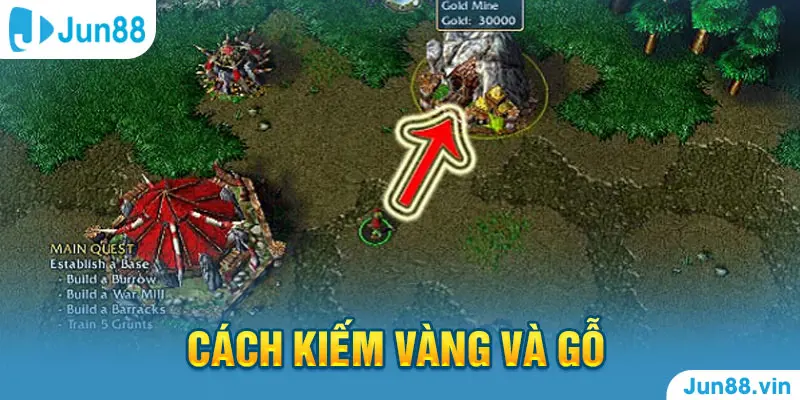

Warcraft Jun88 đem tới cho người tham gia nhiều trải nghiệm thú vị khi vượt qua các vòng chơi. Tựa game này có cách chơi ra sao và quy trình tham gia gồm những bước nào. Jun88 sẽ đồng hành và giải đáp những câu hỏi của các bạn.
Warcraft Jun88 - Hướng dẫn chơi game chi tiết từ A - Z
Giới thiệu về game Warcraft Jun88
Warcraft Jun88 là tựa game thể thao điện tử được nhiều thành viên Jun88 tham gia nhất trong thời gian này. Đây là trò chơi thiên về tính chiến thuật, khả năng phán đoán và xử lý vấn đề. Ở mỗi một cuộc chiến đấu, người chơi sẽ có nhiệm vụ lựa chọn và xây dựng một đội quân mạnh để tham gia vào những cuộc chinh phạt.
Trò này đem đến cho người chơi nhiều trải nghiệm mới mẻ, hấp dẫn với bầu không khí tràn đầy sự kịch tính và khốc liệt. Khi tham gia Warcraft Jun88, anh em sẽ có được những cảm giác rất đặc biệt, khác hoàn toàn so với những tựa game Esports khác.
Quy trình chơi Warcraft Jun88
Để các bạn có thể hiểu rõ hơn về quy trình chơi game, dưới đây chúng tôi sẽ giới thiệu chi tiết tới từng bước để tham gia Warcraft Jun88.
- Bước 1: Thiết lập tài khoản cá nhân tại nhà cái. Bet thủ cần làm theo hướng dẫn của Jun88 để tạo tài khoản thành viên. Những thông tin có dấu sao chắc chắn phải điền và chính xác tuyệt đối.
Quy trình chơi Waracraft Jun88
- Bước 2: Xác nhận yêu cầu đăng ký tài khoản. Nhà cái sẽ gửi thư về email, bạn cần xác nhận lại thông tin để được duyệt yêu cầu tạo tài khoản.
- Bước 3: Tìm kiếm tựa game Warcraft Jun88. Ngay sau khi đã được cấp tài khoản, anh em tiến hành tìm kiếm game Warcraft ở trong kho tàng game của Jun88.
- Bước 4: Tiến hành tham gia vào các cuộc chinh phạt. Chọn chế đội chơi, lựa chọn đội khó của game. Đợi hệ thống xử lý và bắt đầu tham gia.
Hướng dẫn cách chơi Warcraft Jun88 chi tiết
Dưới đây, chúng tôi sẽ hướng dẫn các thao tác di chuyển và tham gia Warcraft Jun88 chi tiết nhất.
Những phím tắt sử dụng trong Warcraft
Có những phím tắt bạn cần đặt biệt quan tâm đó là:
- F9: Mở giao diện game.
- F10: Thiết lập những cài đặt về âm thanh, ánh sáng chất lượng hình ảnh, hoặc lưu game.
Cách di chuyển quân lính
Trong quá trình chơi, bet thủ sẽ cần phải di chuyển được binh lính của mình. Khi đã nắm được cách điều khiển quân lính, bạn có thể dễ dàng thao tác cũng như ra lệnh cho binh lính làm theo ý của bản thân. Để di chuyển, anh em có thể làm theo hướng dẫn sau đây:
- Cách 1: Click chuột trái vào tướng hay quân lính để di chuyển. Nhấn chuột trái vào mũi tên màu đỏ hoặc ô phía dưới bên phải màn hình hoặc ấn phím tắt M, sau đó nhấn chuột trái vào vị trí bạn muốn nhân vật di chuyển đến.
- Cách 2: Click chuột trái vào nhân vật sau đó nhấn giữ vào kéo đến vị trí bạn muốn chuyển tới. Nhấn chuột phải vào vị trí này, nhân vật của bạn sẽ được chuyển tới vị trí mới.

Cách kiếm vàng và gỗ
Cách kiếm vàng và gỗ
Khi tham gia Warcraft Jun88, việc thu thập vàng và gỗ là rất quan trọng. Khi có vàng hoặc gỗ, anh em có thể mua lính, nâng cấp nhà, sắm thêm các trang thiết bị, vũ khí mới.
Điều kiện giúp bạn có thể kiếm thêm và gỗ đó chính là tướng chính cần đạt từ cấp 2 trở lên. Khi chuyển sang cấp 2, Jun88 sẽ gửi tặng tới người chơi một người nông dân tên gọi là Peon và mỏ vàng có khoảng 30000 vàng ở gần nhà của bạn. Nhiệm vụ của người nông dân này là khai thác vàng và gỗ nhiều nhất có thể.
Những bước bạn cần làm để Peon khai thác tài nguyên gồm có:
- Bước 1: Click chuột phải chọn vào Peon, thực hiện các thao tác di chuyển như di chuyển lính.
- Bước 2: Nhấn chuột trái vào hình búa, sau đó click vào mỏ vàng để Peon khai thác tài khoản. Ngoài ra, anh em cũng có thể click vào gỗ để Peon thu thập.
Cách xây nhà lính và các công trình
Khi đã có kha khá tài nguyên, việc tiếp theo bạn cần làm đó chính là xây dựng nhà và các công trình khác để hoàn thành được nhiệm vụ đưa ra ban đầu.
Hướng dẫn người chơi cách chơi Warcraft Jun88 chi tiết
Để xây nhà và các công trình, bet thủ cần làm theo những bước sau:
- Bước 1: Click chuột trái để chọn Peon.
- Bước 2: Chọn biểu tượng có hình hộp ở góc phải màn hình.
- Bước 3: Tìm kiếm công trình bạn muốn xây dựng sau đó di trỏ chuột vào vị trí đó.
- Bước 4: Công trình sẽ được xây tại vị trí bạn mong muốn khi hiển thị màu xanh. Trường hợp hiện màu đỏ, bạn cần tìm đến một địa điểm khác.
Những thông tin liên quan tới tựa game Warcraft Jun88 mong rằng sẽ hữu ích cho các bạn. Đây là một game rất hay, chắc chắn sẽ đem lại nhiều cảm giác thú vị cho các bạn. Nếu cảm thấy thích thú với tựa game này, hãy tạo tài khoản và tham gia cùng chúng tôi.
>>> Xem thêm: Jun88 - Street Fighter V | Game Song Đấu Võ Thuật Cực Hấp Dẫn